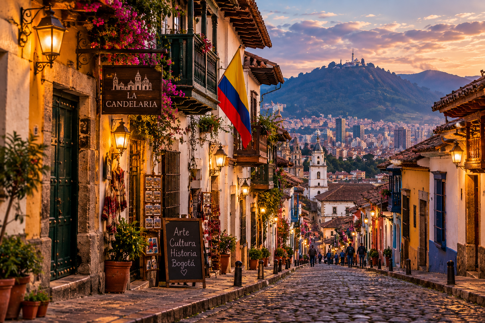

La Candelaria
La Candelaria is one of the most important historic areas of Bogotá and is characterized by its streets, colonial houses, and colorful facades. Its surroundings are home to different cultural spaces and traditional establishments.
Walking through its streets allows visitors to learn about part of Bogotá's history while enjoying an area where architecture, art, and different expressions of local culture come together.
Its historic atmosphere makes this area one of the most representative routes for those who want to discover the traditional center of the capital.
You can walk through its streets and visit its different museums, squares, churches, cafés, and cultural spaces.